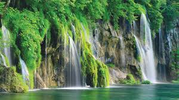
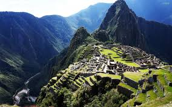

Плітвицькі озера (Plitvička jezera) - одна з найбільш значних природних пам'яток Хорватії. На території національного парку, що займає площу в 29,5 гектарів, розташовані мальовничі водоспади, печери, водойми, озера і буково-смерекові ліси, де можна зустріти
косуль, лісових котів і поспостерігати за рідкісними видами птахів. У 1979 році національний парк Плітвіцькі озера був включений до Списку Всесвітньої спадщини ЮНЕСКО.
Королівство Таїланд у перекладі означає – «острів свободи». Це один із найбільш популярних екзотичних напрямів у південно-східній Азії. В першу чергу, цьому сприяє, те що тут доступні ціни на товари та послуги, насичена екскурсійна програма, комфортний
пляжний відпочинок і чудовий сервіс. Туризм в Таїланді розвивається завдяки головним курортам – Патайї, Самуї та Пхукету. Саме тут прекрасні умови для заняття дайвінгом, веселе нічне життя, багатий різними програмами і розвагами відпочинок.
На території Таїланду маса заповідників, джунглі, крокодилячі та слонові ферми, велика кількість буддистських храмів.

До цих пір точно невідомо, коли саме загинули останні жителі цього загубленого міста, зате ми майже точно знаємо, що про існування високо в перуанських горах таємничого поселення ніхто навіть не підозрював більше трьох століть! Назва міста Мачу-Пікчу
дослівно перекладається як “стара гора”. Поселення розташувалося на практично рівному м айданчику однієї з численних гір Перу, в оточенні інших, не менш красивих вершин. Ні іспанські конкістадори, що захопили Перу в XVI столітті, ні ті,
хто прийшов сюди після них, ні самі інки, які проживали в Мачу-Пікчу – не залишили жодних письмових свідчень того, що місто існує. Швидше за все, іспанці навіть подумати не могли, що на одній з гір знаходиться поселення інків. Покинуте
древнє місто було виявлене лише на початку XX століття …